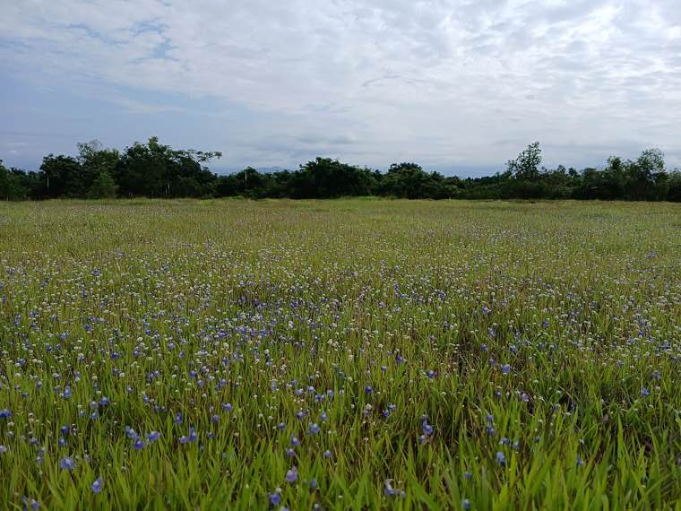
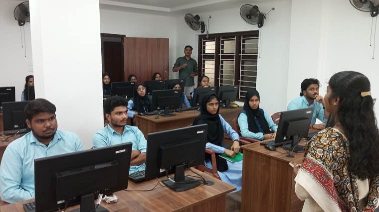
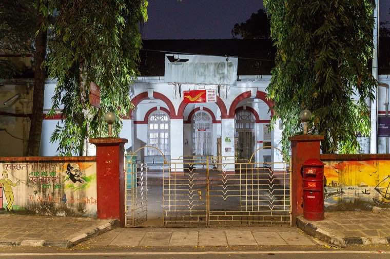
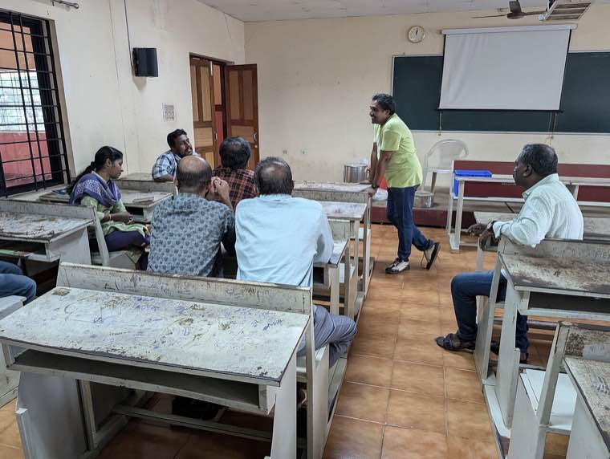

The story in brief
Getting a copy of your land record used to mean a day's wages lost, a visit to the village office, and a stack of photocopies. With Ente Bhoomi, it now takes ten minutes from your phone — and shows you everything: ownership, encumbrances, mutations, and the map.
For decades, every family transaction — a sale, a partition, a loan — depended on a thin paper record kept in a thick register at the village office. Disputes, errors and middlemen thrived in the gap between the citizen and that register.
Ente Bhoomi ("My Land") brings that register to your hand. It is built on top of ILIMS — the Integrated Land Information Management System — which links survey, revenue and registration data so the same parcel cannot be sold twice or mutated quietly.
What changed for people
- Land records are downloadable as authenticated digital certificates from your phone or any common service centre.
- Survey maps now match revenue records — fewer disputes, faster mutations, less litigation.
- Encumbrance information is visible upfront, protecting buyers from hidden liabilities.
- Senior citizens, women, and tribal households can access records without depending on intermediaries.
The officer playbook
Overview
Kerala's land records existed in three parallel silos: the Survey Department's plot maps, the Revenue Department's ownership ledgers, and the Registration Department's transactions. Each was authoritative on its own, but together they often disagreed — and the citizen paid the price for that disagreement.
Ente Bhoomi is the citizen-facing front-end. ILIMS is the deeper plumbing: a unified geospatial database that reconciles survey, revenue and registration data into a single source of truth keyed on a unique survey number.
The initiative pairs a resurvey using drones and DGPS in selected blocks with a phased onboarding of legacy data — so the system grows in accuracy without waiting for a full statewide resurvey to finish.
Challenges
Three departments, three truths
Survey, Revenue and Registration each maintained their own version of every parcel. Reconciliation rules had to be co-designed without making any department a "loser".
Legacy paper records, decades of accretion
Most ledgers were hand-written, many were torn, some were lost. A tiered digitisation strategy was needed — image first, key data second, full attributes third.
Public anxiety about errors
Citizens feared that going digital would lock in mistakes. A 30-day public objection window for every digitised parcel became non-negotiable.
Capacity of village officers
The system depends on the village officer cadre being comfortable with maps, mutations, and the new portal. Sustained training and on-call helplines were essential.
What was done
- Constituted a State Land Information Authority with cross-departmental membership — empowered to resolve reconciliation disputes.
- Adopted a phased resurvey using drones, DGPS and ground control points, starting with high-litigation taluks.
- Built ILIMS as an open-standards platform — APIs for banks, courts, and other departments to consume.
- Launched Ente Bhoomi as the citizen-facing portal and app, in Malayalam first, English second.
- Mandated a 30-day public objection window for every digitised parcel, with grievance redressal at the taluk level.
- Linked Ente Bhoomi outputs to common service centres (Akshaya) for citizens without smartphones.
Technology & systems
- PostGIS-backed geospatial database with parcel-level versioning
- Drone-based aerial survey integrated with DGPS ground control
- Open APIs for inter-departmental and bank/court integrations
- Aadhaar-based eKYC and DigiLocker for authenticated downloads
- Mobile-first Progressive Web App in Malayalam and English
- Audit logs and tamper-evident certificate signing
Outcomes
- Over 30 million parcels mapped to ILIMS, with phased citizen-facing access.
- Average wait time for ownership certificates fell from days to minutes in onboarded villages.
- Mutation pendency dropped sharply — and is now publicly tracked at the taluk level.
- Banks can verify encumbrances digitally, accelerating loan processing for citizens.
- Estimated citizen time savings: equivalent to ₹420 crore annually in productive hours.
Process flow
1. Block selection
Pick high-litigation, low-coverage blocks for the first phase — early wins earn trust.
2. Aerial resurvey
Drone + DGPS sweep generates a fresh, geo-referenced parcel map.
3. Reconciliation
Survey, revenue and registration records cross-validated against the new map.
4. Public objection window
Every parcel posted publicly for 30 days; objections heard at taluk level.
5. Citizen onboarding
Ente Bhoomi portal goes live for the block; village officers trained and stationed.
6. Continuous mutation
All new transactions flow through ILIMS, keeping the source of truth current.
Replication toolkit
- Inter-departmental governance MoU template (Survey / Revenue / Registration)
- Drone resurvey RFP boilerplate and quality specifications
- 30-day objection window SOP and citizen notice template
- Village officer training curriculum (5-day modular)
- ILIMS API documentation and reference integrations
- Helpline / grievance escalation matrix
On the ground




How it unfolded
- 2017
Governance MoU signed
Survey, Revenue and Registration departments co-sign reconciliation rules and form the State Land Information Authority.
- 2018
Pilot resurvey begins
Drone-based resurvey starts in two high-litigation blocks; reconciliation rules tested in the field.
- 2020
ILIMS goes live
Unified geospatial database operational; first inter-departmental APIs published.
- 2022
Ente Bhoomi portal launched
Citizen-facing portal and mobile app go live in Malayalam and English.
- 2024
30M parcels milestone
Phased onboarding crosses 30 million parcels; certificate downloads average under 10 minutes.
Documents & templates
Request any of these by email — we will share what is available.
Want to adapt Ente Bhoomi & ILIMS in your district?
Tell us your context and constraints — we will connect you with the toolkit and the people who built it.